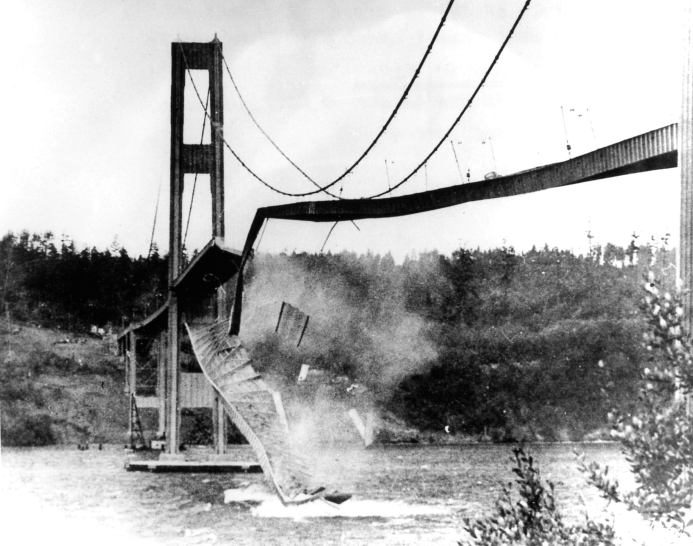

### 風の力で振れ幅が大きくなる振り子！？ #### 〜タコマナローズ橋はなぜ落ちたのか〜 --- ### 自己紹介 <div class="profile-container"> <div class="profile-left"> * さめ(мег-сск) * 🧑💻 フリーランスのソフトウェアエンジニア * 🧑🎓 社会人学生として通信制大学在学中 * 得意分野: * 📸 コンピュータビジョン (画像認識/点群処理) * 🌍 空間情報処理 (地理情報/リモートセンシング) * ☁️ クラウドインフラ設計/IaC (AWS, GCP) * [GitHub](https://github.com/s-sasaki-earthsea-wizard) * [YouTube](https://www.youtube.com/@SyotaSasaki-EW) * [Speaker Deck](https://speakerdeck.com/syotasasaki593876) </div> <div class="profile-right"> <img src="assets/images/avatar.png" alt="avatar" height="350px" width="350px"> </div> </div> --- ### 今日話すこと <div class="simple-box"> * タコマナローズ橋はなぜ落ちたのか？ * 1940年11月7日に起きた橋の崩落事故 * 調和振動と減衰振動の運動方程式 * シンプルな振り子のモデル * ベルヌーイの定理と揚力、逆揚力 * 揚力による負の減衰をする振動方程式 * **自励振動**のメカニズム * 運動方程式のわずかな違いが結果を大きく変える！ </div> --- ### タコマナローズ橋の崩落 <div class="simple-box"> * 1940年11月7日に崩落 * 風によって橋が大きくうねった！ * 実際に動画を見てみよう！ </div>  --- ### 現在のタコマナローズ橋 <div class="simple-box"> * 1950年に再建 * 2007年に2本目の橋を建設 * 今日は崩落した旧橋のことを「タコマナローズ橋」と呼びます </div> --- ### 注意点 <div class="simple-box"> * 実際の橋の崩落の原因はもっと複雑 * 風洞実験や数値シミュレーションが橋梁の設計に使われている * でも今日は最もシンプルなモデルを考える * **自励振動のメカニズム**にフォーカスします！ </div> --- ## 振動の運動方程式 --- ### 振り子の運動: 調和振動 <div class="simple-box"> * 振り子を持ち上げて手を離す * 重力によって中央へ動かす復元力が働く * 中央を通っても急に止まれず逆端まで振れる * 復元力で再び中央へ戻ろうとする * この繰り返しで振り子は振動する </div> <img src="assets/images/harmonic-oscillator-pendulum.svg" height="400px"> --- ### 調和振動の運動方程式 $$ m\frac{d^2x}{dt^2} + \underbrace{kx}_{\text{復元力}} = 0 $$ <div class="simple-box"> 一般解は $$ x(t) = A \cos\left(\sqrt{\frac{k}{m}} t + \varphi \right) $$ </div> <br> <div class="highlight-box"> * この運動は**調和振動**と呼ばれる </div> --- ### 減衰振動の運動方程式 <div class="simple-box"> * 実際の振り子はいつまでも振動し続けるわけではない * 空気抵抗や摩擦などの減衰力が働くため振動は徐々に小さくなる </div> $$ m\frac{d^2x}{dt^2} + \underbrace{\beta \frac{dx}{dt}}_{\text{減衰力}} + kx = 0 $$ --- ### 減衰運動の一般解 $$ x(t) = A \exp(-\beta t) \cos\left(\sqrt{\frac{k}{m}} t + \varphi \right) $$ <div class="highlight-box"> * 徐々に振動が小さくなる (**減衰振動**) </div> --- ## 揚力と逆揚力 --- ### 流体の運動 <div class="simple-box"> * 空気や水などの「流れるもの」を流体という * 風や水の流れによって物体に加わる力は流体の運動によって理解できる </div> --- ### ベルヌーイの定理 <div class="simple-box"> * 流体の速度と圧力の関係を表す定理 * 流体の速度が速いと圧力が低くなる * 流体の速度が遅いと圧力が高くなる * 空気は軽いので今日はポテンシャルエネルギーを無視します </div> $$ p + \frac{1}{2}\rho v^2 + \cancel{\rho gh} = \text{const} $$ --- ### 揚力 <div class="simple-box"> * 板の上側の流体の速度が速くなる * 圧力が小さくなる * 板の下側の流体の速度が遅くなる * 圧力が大きくなる * 圧力差によって板に上向きの力が働く (**揚力**) </div> <img src="assets/images/lift.svg" height="600px"> --- ### 逆揚力 <div class="simple-box"> * 板の上側の流体の速度が遅くなる * 圧力が大きくなる * 板の下側の流体の速度が速くなる * 圧力が小さくなる * 圧力差によって板に下向きの力が働く (**逆揚力**) </div> <img src="assets/images/negative-lift.svg" height="600px"> --- ### 揚力と逆揚力の応用例 <div class="simple-box"> * 揚力による上向きの力で飛行機が飛ぶ * 逆揚力による下向きの力でF1カーはサーキットに押さえつけられる </div> <div class="container"> <div class="col"> <img src="assets/images/ImageForArticle_12117_45061012169386578276.png" width="700px"> </div> <div class="col"> </div> </div> --- ## 自励振動 --- ### 自励振動のメカニズム <div class="simple-box"> * 振り子が風によって揚力を受ける * 揚力が振動を大きくする作用を生み出す！ (**自励振動**) </div> <img src="assets/images/self-excited-pendulum.svg" height="600px"> --- ### 自励振動の例え <div class="simple-box"> * 振動に合わせてブランコを揺らすと振動が大きくなる！ * これと同じことが揚力で生じる！ </div> --- ### 自励振動の運動方程式 $$ m\frac{d^2x}{dt^2} \underbrace{ - \beta \frac{dx}{dt}}_{\text{正負が逆！}} + kx = 0 $$ <div class="simple-box"> * 揚力による負の減衰をする * 符号が変わっただけだが... * どうなるか？ </div> --- ### 自励振動の一般解 <img src="assets/images/self-excited-vibration.png" height="250px"> $$ x(t) = A \exp(\beta t) \cos\left(\sqrt{\frac{k}{m}} t + \varphi \right) $$ <div class="highlight-box"> * 振動が大きくなる！ </div> --- ### タコマナローズ橋はなぜ落ちた？ <div class="simple-box"> * 自励振動のメカニズムが働いた！ * 風の力で振れ幅が大きくなった！ * 数学的には振幅は指数関数的に大きくなる... * しかし実際の橋はいつか耐えられなくなる！ </div> --- ### まとめ <div class="simple-box"> * 調和振動の運動方程式で振り子の運動を表せる！ * 減衰項を加えた減衰振動の運動方程式で徐々に振動が小さくなる振り子の運動を表せる！ * 流体の流れと板の傾きによって上向きの揚力、または下向きの逆揚力が働く！ * 揚力による負の減衰をする振動方程式で自励振動のメカニズムを表せる！ * 減衰項の符号が逆になっただけで結果が大きく変わる！ </div> --- ### 符号ひとつで世界が変わる！ $$ m\frac{d^2x}{dt^2} + \beta \frac{dx}{dt} + kx = 0 $$ $$ m\frac{d^2x}{dt^2} - \beta \frac{dx}{dt} + kx = 0 $$ <div class="container"> <div class="col"> </div> <div class="col"> <img src="assets/images/self-excited-vibration.png" width="400px"> </div> --- ### 補足 <div class="simple-box"> * 実際の橋梁の流体力学はもっと複雑 * タコマナローズ橋は空力弾性フラッターが原因で崩落したと考えられている * ねじれ振動(torsional vibration)も大きな原因 * **自励振動だけが原因ではない！** * でも今日は最もシンプルな自励振動を取り上げました！ </div> --- ### LT登壇者の募集 <div class="simple-box"> * 物理学集会ではLT登壇者を募集しています！ * どんなジャンルでもOK！ * 応募がないと主催がまたLTという名目のジャイアンリサイタルを開くことになります... * 興味のある方は物理学集会のDiscordサーバーまで！ </div> --- ### 告知 <div class="simple-box"> * 次回開催は5月17日を予定しています * YouTubeの物理の動画をみんなで見ようと思ってます * 「この動画をみんなで見たい！」という提案も大歓迎です！ </div>